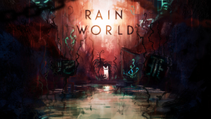
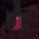

| Slugcats |
Noms |
|  |
Artificer |
 |
Saint |
|
Survivor |
''Vous êtes un chat-limace nomade, à la fois proie et prédateur, qui évolue dans un
écosystème corrompu. Muni de votre lance, affrontez les friches industrielles et chassez
pour survivre. Prenez garde.... D'autres créatures, bien plus imposantes, font de même,
et raffolent des chats-limaces.'', VideoCult, Steam.